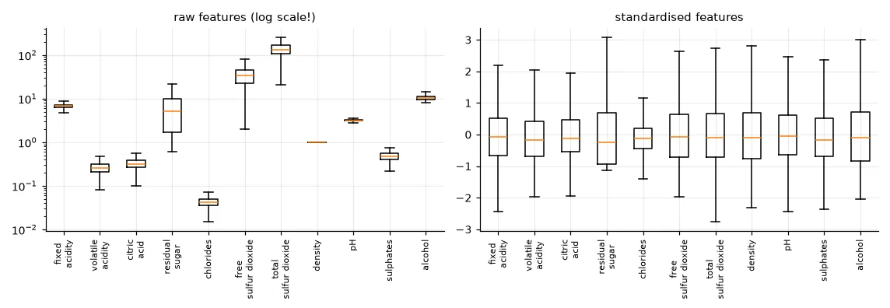
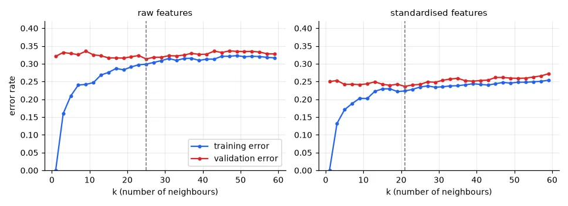
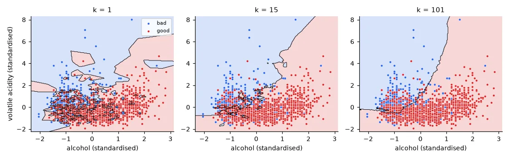

What "learning" means here#
Supervised learning is learning a function \(f\) from examples. We have \(N\) samples, each with \(d\) input features \(\mathbf{x}_i \in \mathbb{R}^d\) and a label \(y_i\), and we want \(f(\mathbf{x}) \approx y\) — not on the examples we have, which would be easy, but on new ones. Everything in this course is a variation on that sentence: how to choose \(f\), how to fit it, and how to measure whether it works on data it has never seen.
When \(y\) is a category we speak of classification; when it is a number, of regression (lesson 02).
The data: 4,898 Portuguese white wines#
The Wine Quality dataset (UCI) has 11 physico-chemical measurements per wine — acidity, sugar, sulphates, alcohol… — and a quality grade from 3 to 9 given by experts. The script downloads it once into data/cache/.
URL = "https://archive.ics.uci.edu/ml/machine-learning-databases/wine-quality/winequality-white.csv"
df = pd.read_csv(U.fetch(URL, "winequality-white.csv"), sep=";")
print(df.shape) # (4898, 12): 11 inputs + the quality grade
print(df["quality"].value_counts().sort_index().to_dict())
X = df.drop(columns="quality").to_numpy() # (4898, 11) float64
y = (df["quality"] >= 6).astype(int).to_numpy() # 1 = good wine (grade 6+), 0 = bad
print("good wines: %d, bad wines: %d" % (y.sum(), (1 - y).sum()))
(4898, 12)
{3: 20, 4: 163, 5: 1457, 6: 2198, 7: 880, 8: 175, 9: 5}
good wines: 3258, bad wines: 1640
Grades 3 and 9 have 20 and 5 samples: far too few to learn seven separate classes. As in the lab, we turn it into a binary problem: good (grade ≥ 6) or bad. Note the imbalance — two thirds of the wines are good. A "classifier" that always answers good is already right 66.5% of the time; that is the baseline any model must beat.
Look at the data first#
stats = pd.DataFrame({"mean": X.mean(0), "std": X.std(0)}, index=df.columns[:-1])
print(stats.round(4).to_string())
corr = np.corrcoef(X, rowvar=False)
i, j = np.unravel_index(np.argmax(np.abs(corr - np.eye(11))), corr.shape)
print("strongest correlation: %s / %s = %.2f" % (df.columns[i], df.columns[j], corr[i, j]))
mean std
fixed acidity 6.8548 0.8438
volatile acidity 0.2782 0.1008
...
total sulfur dioxide 138.3607 42.4937
density 0.9940 0.0030
...
strongest correlation: residual sugar / density = 0.84
The standard deviations go from 0.003 (density) to 42 (total sulfur dioxide): four orders of magnitude. Keep that in mind — it will matter as soon as we compute distances. Sugar and density are strongly correlated (sugar makes the wine denser), so the 11 features carry less than 11 independent pieces of information (lesson 10 will exploit that).

Three sets, three roles#
If we measure the quality of a model on the samples it was trained on, we measure its memory, not its ability to generalise. So we split the data:
- Training set — the model sees these samples and fits its parameters.
- Validation set — used to choose hyper-parameters (here \(k\)), compare models, decide when to stop.
- Test set — touched once, at the very end, to report an honest number. If you use it to make any decision, it silently becomes a second validation set and the number is optimistic.
# 1/3 train, 1/3 validation, 1/3 test, each with the same proportion of good wines
X_train, X_test, y_train, y_test = train_test_split(X, y, test_size=1 / 3, stratify=y, random_state=0)
X_train, X_val, y_train, y_val = train_test_split(X_train, y_train, test_size=0.5, stratify=y_train,
random_state=0)
for name, part in [("train", y_train), ("val", y_val), ("test", y_test)]:
print(f"{name:5s} {len(part):5d} samples, {part.mean():.1%} good")
train 1632 samples, 66.5% good
val 1633 samples, 66.5% good
test 1633 samples, 66.5% good
Two details matter. Shuffle: datasets are often sorted (by date, by class, by source), and a split without shuffling may put all the red wines in the test set. Stratify: with stratify=y every part keeps the class proportions, so the three error rates are comparable.
k-nearest neighbours from scratch#
The simplest classifier there is: to classify a new sample, find the \(k\) training samples closest to it and take a majority vote. No training phase at all — the "model" is the training set itself.
The only real work is computing all distances. Instead of two nested loops, we expand \(\|\mathbf{a}-\mathbf{b}\|^2 = \|\mathbf{a}\|^2 - 2\,\mathbf{a}\cdot\mathbf{b} + \|\mathbf{b}\|^2\), which turns the whole distance table into one matrix product:
def knn_predict(X_train, y_train, X_query, k):
"""Majority vote among the k closest training samples (Euclidean distance)."""
# squared distances between every query and every training sample: (n_query, n_train)
d2 = (X_query ** 2).sum(1)[:, None] - 2 * X_query @ X_train.T + (X_train ** 2).sum(1)[None, :]
nearest = np.argpartition(d2, k - 1, axis=1)[:, :k] # indices of the k smallest, unordered
votes = y_train[nearest] # (n_query, k) labels of the neighbours
return (votes.mean(1) > 0.5).astype(int) # binary labels, odd k: no ties
np.argpartition finds the \(k\) smallest values without sorting the whole row (\(O(n)\) instead of \(O(n \log n)\)). Same answers as scikit-learn:
mine = knn_predict(X_train, y_train, X_val, k=3)
ref = KNeighborsClassifier(n_neighbors=3).fit(X_train, y_train).predict(X_val)
print("k=3: validation error %.3f, agreement with scikit-learn %.1f%%"
% (np.mean(mine != y_val), 100 * np.mean(mine == ref)))
k=3: validation error 0.332, agreement with scikit-learn 100.0%
33% error — worse than always answering "good". Something is wrong, and it is not the algorithm.
Choosing k, and why scaling changes everything#
def error_curves(Xa, Xv, ks):
tr, va = [], []
for k in ks:
clf = KNeighborsClassifier(n_neighbors=k).fit(Xa, y_train)
tr.append(np.mean(clf.predict(Xa) != y_train))
va.append(np.mean(clf.predict(Xv) != y_val))
return np.array(tr), np.array(va)
ks = np.arange(1, 60, 2)
tr_raw, va_raw = error_curves(X_train, X_val, ks)
scaler = StandardScaler().fit(X_train) # mean and std of the TRAINING set only
Xs_train, Xs_val, Xs_test = (scaler.transform(a) for a in (X_train, X_val, X_test))
tr_std, va_std = error_curves(Xs_train, Xs_val, ks)
for name, va in [("raw", va_raw), ("standardised", va_std)]:
print(f"{name:13s} best k = {ks[va.argmin()]:2d}, validation error {va.min():.3f}")
raw best k = 25, validation error 0.314
standardised best k = 21, validation error 0.236

Two lessons in one figure:
- Overfitting. With \(k=1\) the model memorises the training set (0% training error) and generalises badly. As \(k\) grows the decision becomes smoother; too large and it underfits (both errors rise). The best \(k\) is where the validation error is lowest. The gap between the two curves is the signature of overfitting; you will see it again with tree depth, polynomial degree, network size and training epochs.
- Scaling. On raw data the Euclidean distance is dominated by total sulfur dioxide (std 42); alcohol, the most informative feature, barely counts. After standardisation, \(z = (x-\mu)/\sigma\), every feature has the same weight in the distance and the error drops from 31% to 24%.

Fit the scaler on the training set only
StandardScaler().fit(X_train) computes \(\mu\) and \(\sigma\) on the training set, and the same numbers are applied to validation and test. Fitting it again on the validation or test set (I did this in one of my lab reports: sc.fit(X_val); sc.transform(X_val)) is data leakage: the preprocessing uses information about data that is supposed to be unseen. Here the effect is small; with time series or small datasets it can make a useless model look good. Every preprocessing step that learns something — scaling, PCA, imputation, feature selection — is part of the model and is fitted on the training set.
The final number#
Only now do we touch the test set, once, with the chosen \(k\):
k_star = ks[va_std.argmin()]
clf = KNeighborsClassifier(n_neighbors=k_star).fit(Xs_train, y_train)
print("k* = %d -> test error %.3f (majority-class baseline: %.3f)"
% (k_star, np.mean(clf.predict(Xs_test) != y_test), min(y_test.mean(), 1 - y_test.mean())))
k* = 21 -> test error 0.257 (majority-class baseline: 0.335)
The test error (25.7%) is a bit higher than the best validation error (23.6%). That is expected: we picked \(k\) because it was lucky on the validation set. This optimism is exactly why we keep a separate test set. Lesson 06 replaces the single validation split by cross-validation, which makes the choice less dependent on one random split.
k-NN in practice#
- No training, slow prediction: every prediction compares against the whole training set — \(O(N d)\) per query. For large \(N\) use KD-trees or approximate nearest-neighbour libraries (FAISS); scikit-learn picks a tree automatically.
- The curse of dimensionality: in high dimension all points are almost equally far apart and "nearest" stops meaning much. k-NN works well on few, meaningful, well-scaled features — or on learned embeddings, where it comes back in lesson 17 to recognise faces.
Exercises#
- Keep the original 7 grades as a multi-class problem. What is the error now? Which grades are confused with which?
- Replace the majority vote by a vote weighted by \(1/d\) (
weights="distance"). Does it change the best \(k\)? - Repeat the split with 10 different
random_statevalues and plot the spread of \(k^*\) and of the test error. How much should you trust a single split?